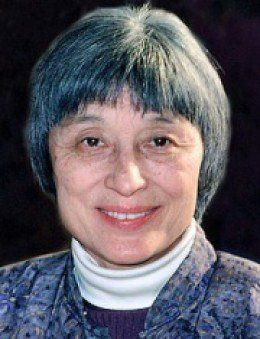

Do một định mạng mà mang hai dòng máu Đông và Tây, Han Suyin được cái thiên tư hiếm có và quý báu là có tinh thần rộng rãi, không cố chấp.
Gilles Lapouge trong tờ Figaro littéraire nhận định bà như sau: ‘‘…Bà dạo khắp các biên cương trên thế giới như thể thế giới không có biên cương vậy mà không biết rõ hơn bà rằng thế giới này rất chia rẽ. Bà len lỏi từ tâm hồn này tới tâm hồn khác, từ văn minh này tới văn minh khác, từ tôn giáo này tới tôn giáo khác”.
Tôi thấy tiếng “len lỏi” có thể hiểu lầm là đồng ;nghĩa với “khôn khéo” hoặc “thận trọng”, nên muốn đổi ra là: “di động”. Do những hoàn cảnh trong gia đình và trong đời sống, bà ở vào một tình trạng mà người thì cho là may mắn, kẻ lại cho là tai hại, và bà đã chọn làm người Trung Hoa, đã không từ bỏ phương Đông mà còn tiến sâu vào lòng một nền văn minh và một quốc gia mà bà là người thừa kế và phải chịu trách nhiệm.
Dòng máu của cha đã thắng di truyền của mẹ. Và nhờ dòng máu Bỉ của mẹ, bà mới làm cho phương Tây hiểu được phương Đông mặc dầu giọng của bà đích thực là giọng Á châu. Tổ tiên bên nội là giai cấp quan liêu Trung Hoa, tổ tiên bên ngoại là giai Cấp đại tư sản Âu: bà không từ bỏ bên ngoại mặc dầu vẫn tự coi mình là nguồn gốc Á, vẫn trung thành giữ mối liên lạc với Trung Hoa, can đảm chịu mọi lời nguyền rủa (1) mà thắng được mọi trở ngại.
Ai mới gặp bà lần thứ nhất cũng ngạc nhiên về sự thông minh của bà. Dù nói chuyện mưa nắng bằng một giọng rất bình thản: “Mùa hè này thực là nóng chịu không nổi... Ở New York cũng không hơn gì... tám ngày trước đây, như ở trong lò vậy...”, mà nhìn bà, chúng ta cũng phải khen rằng: “Bà này thông minh dị thường.

Cách ăn bận, đi đứng, mỉm cười, cả khóe mắt của bà nữa đều để lộ sự thông minh đó.
Thông minh luôn luôn là một trong những đức chính của phụ nữ Trung Hoa, dù họ thuộc hạng trí thức, có một nền văn hóa phong nhã, hay thuộc hạng bình dân, có một nghệ thuật sống rất tự nhiên.
Han Suyin mảnh mai, thanh nhã và đẹp, đẹp nhờ cá tính và sinh khí hơn là nhờ đường nét cân đối. Cử chỉ của bà thung dung, vì đã quen giao thiệp với mọi giới trong mọi xứ. Nhưng bà có cái gì làm cho ta phải thận trọng, không dám tỏ vẻ khinh suất.
Chắc bà có đức tự chủ cực cao, bề ngoài càng nén được cảm xúc bao nhiêu thì bề trong lại càng xúc động bấy nhiêu. Có lẽ một chút gì cũng có thể làm lòng tự ái của bà bị tôn thương được.
Một người như bà viết về ái tình, về cảnh khốn nạn của con người, về sự sinh ly tử biệt mà làm cho lòng độc giả phải rung động, thì không thể nào không cảm thấy một phần những điều mình viết, mặc dầu là viết thành những câu mạnh mẽ, giản dị, có vẻ như bình thản nữa.
Trong cuộc đời của bà, chắc đã có nhiều lúc bà tỏ ra cương quyết, nghiêm khắc chú trọng vào hiệu quả tới cái mức dam mê, gần như là tội lỗi nữa.
Chính cái tương phản (tự chủ mà lại đam mê) mà ta cảm thấy trong tâm hồn bà đó làm cho bà có một sức quyến rũ lạ thường (2).
Han Suyin và tôi ngồi đối diện nhau, ở bến Kennedy, mỗi người một bên cái máy vi âm. Marianne Monestier - Trong cuốn L’Arbre blessé (Cây bị thương tích) kể chuyện gia đình bà, và cũng chép lại lịch sử của Trung Hoa từ cuộc nổi loạn Thái Bình ở giữa thế kỷ XIX tới khi Quốc dân đảng lên cầm quyền. Bà giảng tại sao dân tộc Trung Hoa căm thù liệt cường đã tranh nhau xâu xé, bóc lột tổ quốc họ. Bà cho biết những thắng trận đầu tiên của Nhật Bản đã buộc Trung Hoa phải chịu những bồi thường quá nặng, do đó mà phải vay nợ của các cường quốc châu Âu, thật là tai hại. Bà cho biết bọn quân phiệt đã tàn nhẫn bắt dân đóng thuế, dân nổi loạn, do đó mà chế độ phong kiến mau sụp đổ và gây nên một cuộc cách mạng vừa nổ, đẩy Trung Hoa vào thế giới hiện tại của thế kỷ thứ XX. Và tấm bích họa lịch sử đó đồng thời cũng là bức họa cuộc đời của gia đình bà nữa.
Han Suyin - Không thể nào tách rời thân phụ tôi hoặc thân mẫu tôi ra khỏi Lịch sử thời đại của các người ở Trung Hoa được. Cũng như Marcel Proust, khi viết về đời ông, không thể nào tự tách rời ông, hoặc tách rời nhân vật trong truyện ra khỏi cái thời của họ, ra khỏi các biến cố gây phản ứng trong lòng họ. Hết thảy chúng ta đều là sản phẩm của thời đại và lịch sử chi phối. Năm 1900 ở Trung Hoa có loạn Nghĩa Hòa Đoàn - người Âu gọi là loạn Quyền phỉ - nên thân phụ tôi, đáng lẽ thành một nhà cổ điển học, vô viện Hàn Lâm, thì cưới thân mẫu tôi gốc Bỉ và thành một kỹ sư. Cây thì có gốc rễ, nên tôi trở về gốc rễ. Chẳng hạn các đường hỏa xa, thân phụ tôi cho là quan trọng lắm, và một phần tuổi thơ của tôi đã trôi qua trong các nhà ga lớn hay nhỏ. Ngay bây giờ, mỗi khi nghe thấy tiếng còi hỏa xa là tôi nhớ ngay đến tuổi thơ của tôi.
M.M. - Sau cuốn LArbre blessé, bà còn viết tiếp nhiều cuốn nữa cho thành một bộ chứ?
H.S. - Vâng, ba cuốn nữa sẽ ra: Une fleur mortelle (Một bông hoa phải chết). Un été sans oiseaux (Mùa hè không có tiếng chim)(3). La Moisson du Phénix (4) (Mùa gặt của Phượng hoàng). Bốn cuốn đó, tôi đã bổ cục sao cho mỗi cuốn là một truyện riêng biệt, mặc dầu vẫn có mối liên lạc với nhau.
Toàn bộ phải ghi lại được một hình ảnh đầy đủ về sự diễn biến của một gia đình Trung Hoa, của cả những nhân vật chung quanh gia đình đó nữa.
Không phải là lịch sử, mà lại là lịch sử vì xét cho cùng, ai mà chẳng sống trong lịch sử và dự phần làm nên lịch sử (...). Như vậy tôi đã thực hiện một tác phẩm có thể giáng được cho người Pháp, người Âu và người Mỹ hiểu rõ những cái gì đương xảy ra ở châu Á, và ở Trung Hoa trước hết.
M.M. - Phần đông chúng tôi - dĩ nhiên, không kể các nhà chuyên môn về các vấn đề Viễn Đông không hiểu rõ những gì xảy ra ở Trung Hoa trong thế kỷ XIX, nhất là trong hai chục năm đầu thế kỷ XX. Cuốn L’Arbre blessé là một tiểu thuyết rất hấp dẫn, sẽ lấp được chỗ thiếu sót đó. Điều ấy tôi cho là quan trọng.
H.S. - Tôi xin nhắc lại cuốn LArbre blessé và ba cuốn sau đều ở vào nhiều bình diện; nghĩa là vừa phác lại lịch sử Trung Hoa, vừa chép chuyện nhiều cá nhân; cá nhân như những bánh xe móc vào bánh xe lịch sử. Chẳng hạn cuốn L’ Arbre blessé chẳng phải chỉ là truyện một dân tộc, quốc gia bị đau khổ vì sự xung đột giữa Đông và Tây ở thế kỷ XIX vì những vết thuơng do thực dân phương Tây gây ra; mà còn là truyện nhiều cá nhân ở châu Á bị lôi cuốn vào những biến cố đó nữa, và nhiều cá nhân họp thành một dân tộc, một quốc gia, họ như một cây bị một vết thương. Và tôi tự hỏi như vầy: Thế nào là một cây bị thương tích? Nó bị thương từ hồi trước, hồi còn nhỏ, như vậy nó sẽ còi đi hoài không? Hay là có thể đâm bông kết quả tốt hơn những cây khác? Tôi biết bà cho như vậy là quá lạc quan, nhưng tôi nghĩ rằng lạc quan có phần còn đúng hơn bi quan và tôi áp dụng quan niệm đó vào lịch sử. Người bi quan luôn luôn bảo rằng: “Sự tình mỗi ngày mỗi tệ”. Tôi thấy thế kỷ nào cũng có những người bi quan phàn nàn “sự tình mỗi ngày mỗi tệ” nhưng không phải vì vậy mà nhân loại không tiếp tục con đường của mình. Nhân loại, cũng như cây kia, bị nhiều thương tích đấy, nhưng vẫn tiếp tục sông và kết trái, bất chấp những giông tố đã qua.
M.M. - Tinh thần lạc quan của bà, lòng tin ở cuộc sống và con người đó quả thật là mạnh. Chẳng hạn truyện Multiple splendeur (Muôn vẻ rực rỡ) kết cục bi thảm như vậy mà vẫn tràn trề hy vọng.
(Truyện Multiple Splendeur đã được đưa lên màn ảnh. Nhân vật chính trong truyện giống bà như hình với bóng. Truyện là một truyện tình, kết cục là tử biệt, vậy mà không tuyệt vọng).
H.S. - Phải... tôi cho rằng có lẽ là... tôi không biết chắc đó có phải là đặc tính Trung Hoa không hay chỉ là... có lẽ là đặc tính Trung Hoa thì phải hơn... Chúng tôi có một câu tục ngữ mà chính Mao Trạch Đông thường dùng:...'‘Vượt ra ngoài bi thảm và tai ương mà cố hưởng lấy hạnh phúc”. Và tôi nghĩ nên lấy quan niệm này làm căn bản của giáo dục mà truyền cho các thế hệ sau: đời không phải chỉ có toàn hạnh phúc, mà còn có đau khổ nó liên quan mật thiết với hạnh phúc. Tôi luôn luôn lấy làm lạ rằng người phương Tây không chấp nhận ý đó; họ làm cho trẻ nghĩ lầm rằng chúng muốn mọi sự ra sao thì mọi sự phải như vậy, và chúng luôn luôn phải được sung sướng. Làm sao có thể luôn luôn sung sướng được? Cũng phải có lúc khổ sở nữa chứ. Sự khổ sở là một điều tốt đấy... Vì có khổ sở rồi hạnh phúc mới đậm đà... Không chịu qua cảnh khổ sở thì làm sao thấy được rằng mình sung sướng; không đói thì làm sao thấy được rằng thức ăn ngon? Người Trung Hoa rán đạt được nhân sinh quan đó tới một mức cao nhất.
M.M. - Tôi xin bà nói thêm về nhân vật tượng trưng cho cụ bà và đóng một vai quan trọng trong L’Arbre blessé. Bà tả nhân vật đó bằng một giọng hài hước, đôi khi nghiêm khắc nhưng sự thực thì âu yếm. Nhân vật đó luôn luôn muốn bỏ đi mà rốt cuộc vẫn ở lại...
H.S. - Đúng vậy...
M.M. - Không muốn chịu đựng một cái gì cả mà rốt cuộc chịu đựng hết...
Truyện L’Arbre blessé mở đầu bằng một bức thư nhân vật đó viết ở bên cạnh cái nôi của đứa con đầu lòng:
Thưa Ba Má,
Hôm nay con không có thì giờ viết cho Ba Má một hức thư dài đâu vì hôm qua bọn
cướp đã lại chặt đầu tên bếp của chúng con
Con muốn về ở với Ba Má... Con sẽ buộc anh ấy (tức chồng thiếu phụ) để cho con đi ngay hôm nay... ”.
Vậy mà mấy năm sau, mấy năm sau nữa, thiếu phụ vẫn ở lại, chẳng đi đâu cả, vẫn khó tính như vậy, can đảm mà dữ dằn.
“Tôi đã làm điều gì thất đức đâu, để phải cực khổ như vầy, hỡi Chúa? Tôi muốn đi ngay đây nhưng tự giải thoát cách nào được bây giờ? Có lẽ là một hình phạt nào đây. Thứ bảy trước, Cha Clément hỏi tôi sao không có thêm em bé nào nữa. Tôi đáp: “Sanh tám đứa, bỏ mất bốn, như vậy chưa đủ sao?” và ông ấy cả gan bảo tôi: “Bà mạnh như trâu mà”. Tôi sẽ không bao giờ bước chân vào giáo đường của ổng nữa đâu. Hạng mục sư chẳng biết quái gì cả... Nếu họ trải qua những cảnh tôi đã trải!”.
Vậy là Marguerite Denis vẫn ở lại và sanh thêm một đứa con nữa. Cho tới năm 1949 bà ta vẫn không chịu chấp nhận Trung Hoa, vẫn bực bội, vẫn nhớ quê hương. Mà bà ta vẫn ở lại. Bà ta can đảm đương đầu với những cảnh khủng khiếp, nhiệt liệt phản kháng những nồi bất bình.
(Ở phía kia cái máy vi âm, Han Suyin mỉm cười, có lẽ nhớ lại bà cụ thân sinh đôi khi quạu quọ mà luôn luôn đáng phục).
H.S. - Vâng, tôi thấy rằng thân mẫu tôi là một người khá phi thường. Người không có chút tinh thần hài hước nào cả. Vì sinh trưởng ở châu Âu, người được dạy dỗ theo Âu, có quan niệm rằng đương nhiên người phải được hưởng hạnh phúc, mà quan niệm đó không phải là quan niệm của Trung Hoa, nên người đã thất vọng. Đời của người gần như một bi kịch, nhưng có lẽ như vậy mà lại tốt. Tôi nghĩ rằng... Có người bão tôi: “Bà có vẻ như không quý cụ bà” hoặc “cụ bà có vẻ như không mến bà”. Nhưng vấn đề đâu phải như vậy. Có liên quan gì tới cái đó? Vì vậy mà trong cuốn thứ nhì, Une fleur mortelle, tôi nói rằng tôi rất mang ơn thân mẫu tôi, vì chưa bao giờ người nói dối tôi một lời; luôn luôn người bảo tôi, bằng cách này hay cách khác, rằng người không yêu tôi.
(Khi nói câu đó, giọng của H.S. không có một chút chua chát nào cả dù có thể là
một vết thương lòng rất thầm kín nào đó lại
M.M. — Không ai là không biết điều đó, với lại trong tất cả các tác phẩm, bà cũng đã tỏ rằng bà muốn như vậy: bà luôn luôn cảm thấy rằng bà có tâm hồn Trung Hoa hơn lã tâm hồn Tây phương.
H.S. - Bà biết rằng, về phương diện quốc tịch, thì dòng máu của cha quan trọng hơn; ai cũng theo quốc tịch của cha... Có lẽ cũng còn lý do này nữa: tôi muốn làm y sĩ và hành nghề ở châu Á vì ở đó người ta cần tới tôi hơn là ở các nơi khác... bổn
phận của y sĩ là phải tới chỗ nào có nhiều người xấu số, nhiều người đau ốm trước hết...
(Han Suyin đã học hết ban Trung học ở Bắc Kinh, rồi tại đó, vừa làm thư ký tốc ký và đánh máy, vừa học Y khoa; rồi bà qua châu Âu, học tiếp ngành đó ở Bruxelles, được hưởng học hổng trong ba năm. Năm 1938, chiến tranh Trung Nhật phát sinh, bà trở về Trung Hoa giúp việc trong một y viện. Ở đó bà thành gia thất và sanh một em gái.
Năm 1942, chồng bà, một người Trung Hoa cũng như bà, được phái làm tùy viên quân sự ở Londres. Bà đi theo chồng và hai ông bà ở Anh, tới năm 1945 lại cùng nhau về Trung Hoa theo Tưởng Giới Thạch. Hai năm sau chồng bà mất ở mặt trận.
Sau đó, bà lại qua Londres học lấy nốt bằng cấp y sĩ, hành nghề ở Anh được một năm, nhưng không chống lại được tiếng gọi của tổ quốc, bà trở về Hương Cảng, để hễ có dịp là xin phép vô thăm lục địa. Bà được mãn nguyện.
Nghề y sĩ đưa đẩy bà từ Hương Cảng tới Singapour, rồi lại trở về Hương Cảng. Nhưng bà hy vọng một ngày kia được hành nghề ở Trung Hoa. Trong cuốn... Et la pluie pour ma soif (Trời mưa xuống lấy nước tôi uống), bối cảnh là Mã Lai, nhân vật chính là bà với chức vụ y sĩ, bà dùng ngôi thứ nhất để diễn tả cái trách nhiệm của bà đối với những dân tộc bà coi là huynh đệ của mình...) .
M.M. - Bà Han Suyin, chắc chắn nhờ làm y sĩ mà tác phẩm của bà thêm hùng hậu, tâm lý các nhân vật thêm sắc bén, vì bà đuợc tiếp xúc thân mật với đủ hạng người. Y sĩ và văn sĩ cần có nhiều đức tính giống nhau.
H.S. - Lời của bà hoàn toàn đúng đấy và tôi mừng rằng bà đã nhận xét tôi như vậy. Có những người bảo: “Làm sao có thể vừa làm y sĩ vừa làm văn sĩ được?”.
Họ nói bậy, Duhamel, Céline và nhiều văn sĩ Pháp khác chẳng là y sĩ đấy ư? Người Nga thì có Tchekhov; người Anh có Somerset Maugham. Các vị đó đều đã học y khoa và Tchekhov đã làm y sĩ suốt đời... không hề bỏ nghề... Tôi cũng đã hành động như vậy... Tôi chỉ tạm ngưng hành nghề trong một thời gian để viết cho xong bộ bốn cuốn đó vì tôi cho rằng việc đó rất quan trọng, nhưng tôi mong sẽ không phải ngưng lâu... Đúng vậy, nghề thầy thuốc làm cho ta hiểu thấu tâm lý
con người, và tập cho ta chẩn bệnh một cách khách quan. Một y sĩ không được phép lầm lẫn. Không thể chẩn bệnh rồi bảo: “Thưa ông, ông sổ mũi” khi bệnh nhân bị bệnh cùi. Nhưng một chính khách có thể lầm lẫn được. Chính khách thường chỉ quen dùng danh từ; nên không thận trọng lắm khi bắt mạch tình thế. Riêng phần tôi, tôi cho sự xác thực là rất quan trọng. Trong cuốn L’Arbre blessé mà tôi mới viết xong đây, tôi rán hết sức trung thực về các sự kiện lịch sử cũng như về các sự kiện thuộc phần cá nhân. Hôm qua một sử gia Pháp, giáo sư Sử, tác giả cuốn Lịch sử Trung Hoa rất có giá trị, bảo tôi rằng “không thấy cuốn đó có điều gì sai cả, trái lại, nhờ cuốn đó mà ông ấy biết thêm được nhiều điều mới mẻ nữa”. Lời khen đó làm cho tôi mừng lắm và tôi mang ơn ông ấy nhiều.
M.M. - Bà Han Suyin, bà thỉnh thoảng vô Hoa lục đấy chứ?
(Sự thực, do Catherine van Moppés, nữ ký giả trẻ nhất đã sống ở Trung Hoa giữa đám thanh niên Trung Hoa, tác giả một cuốn linh động, vô tư nhất về Trung Hoa, tôi đã được biết rằng Han Suyin vẫn đều đều lên Bắc Kinh và thu được tiền cho thuê nhà ở đó, đóng thuế mất 25% rồi mà số tiền vẫn còn lớn. Dĩ nhiên bà không về Bắc Kinh vì mục tiêu đó, việc thu tiền chỉ là hậu quả thôi. Điều cốt yếu là bà không muốn mất cái quyền cảm thấy rằng Trung Hoa còn là quê hương của bà).
H.S. - Từ 1949, năm nào tôi cũng trở về Trung Hoa thăm bà con, bạn bè, tìm lại những sự kiện, kỷ niệm cũ, tôi cũng về Bỉ để theo đường mòn của dĩ vãng nữa. Trong nhiều năm, tôi đã cố thu thập được nhiều, phỏng vấn các nhà bác học ở miền Setchouab (5), các nhà truyền giáo ở Gia Nã Đại, các bà dì ở Ostende.
M.M. - Nhưng Trung Hoa đối với bà bây giờ tượng trưng cái gì? Và Bắc Kinh nữa?
H.S. - Tôi cũng đã trả lời câu đó trong cuốn L’Arbre blessé. Tôi sinh ở một nước Trung Hoa nay đã thuộc về dĩ vãng, và cuộc cách mạng năm 1949, đối với tôi cũng như với nhiều người trong giai cấp tôi, cùng một giáo dục như tôi, là một biến cố khủng khiếp; chúng tôi chưa hề bao giờ là cộng sản mà cũng không bao giờ có thể thành cộng sản được vì đã tới cái tuổi không thể còn tin một cách khá mạnh mẽ, bất kỳ một cái gì nữa. Không còn là cái tuổi nổi loạn chống đối, hoặc hét tướng lên “Muôn năm”; “Chiến thắng” rồi vui vẻ nhắm mắt nữa. Nhưng tiếng nói của những người không dấn thân để phục hồi dĩ vãng hoặc chiến đấu cho hiện tại. Với lại thế giới cần có những nghệ sĩ chép lại các biến cố một cách thiện cảm mà không cuồng nhiệt, hơn là cần các nhà truyền giáo độc ác hô hào những cuộc chiến đấu hư ảo chống lại sự thực.
Không thể làm lùi lại chiếc kim đồng hồ được, không thể tìm lại một dĩ văng trong lý tưởng được. Tương lai bắt đầu từ hôm qua, loài cây như vậy mà
loài người cũng vậy.
M.M. - Một bà bạn thân của bà, cũng như bà, cha là người Trung Hoa, mẹ là người Âu, có lần bảo bà như vầy: “Làm sao chị có thể mỗi năm trở về Trung Hoa một lần được; Trung Hoa ngày nay có còn như Trung Hoa ngày xưa nữa đâu? Tôi thì tôi không thể về được nữa. Về để mà thấy những kỷ niệm hồi thơ ấu của mình đã tiêu tan hết, thấy cái gì cũng bị tàn phá hết ở cái châu thành Bắc Kinh thân yêu của mình ư?”
Và bà đã trả lời: “Trước hết, không phải cái gì cũng bị tàn phá hết. Không ai có thể cứ nghĩ tới những cái hoàn hảo ở tuổi thơ ấu mà sống được. Tuổi thơ của chị có thể đã sung sướng đấy, nhưng còn biết bao người khác đã khốn khổ trong cái nước Trung Hoa thời trước...”.
(Có cần phải nhắc lại điều này không? Trung Hoa thời đó, thời cộng sản lên cầm quyền, trước hết là một xứ nông nghiệp. 85% dân chúng là nông dân. Mà điều kiện sinh hoạt chung trong xứ đó ra sao? Cũng như ở Ấn, ở Nhật, ở gần khắp thế giới, tình trạng ở đó là tình trạng nhân mãn.
Ruộng chỉ chiếm 27% đất đai. Không phải là tại những chỗ khác, đất không tốt không trồng trọt được, mà tại thiếu phương tiện, hoặc tại thản nhiên, bất lực mà người ta bỏ hoang những đất đó.
Đất đai rộng 3.500.000 cây số vuông mà chỉ có 12.000 cây số đường xe lửa.
Cảnh cùng khốn của nông dân tới cực điểm.
Ngay trên những cánh đồng phì nhiêu, cũng thường thấy những gia đình gồm bốn năm người sống nhờ bốn chục are (6), mỗi năm tiêu độ 135 đồng bạc Trung Hoa, bằng khoảng 300 đồng quan Pháp ngày nay (7).
Tại miền Kan Sou, nghèo hơn, tháng giêng lạnh buốt xương mà dân thiếu ăn, đói, ra đường bận toàn áo vá, rách tả tơi. Người lao động trung bình Trung Hoa thường chỉ được ăn cơm với ít rau chấm muối. Mỗi tháng hai lần mới được thêm vài miếng thịt.
Tới mùa dưa hấu, có những người vốn liếng chỉ có mỗi một trái dưa, xẻ ra làm nhiều miếng đem bán cho hạng lao động.
Cho tới năm 1949, hậu quả của tình trạng đó là bọn điền chủ có quyền “đêm đầu ”- tức quyền phá tân - các con gái tá điền khi họ về nhà chồng; người nghèo phải bán con gái mười tuổi lấy mười đồng bạc Trung Hoa, còn bọn cho vay thì tàn nhẫn lấy lãi nặng quá chừng quá đỗi.
Các tiệm cầm đồ ở nhà quê chất đầy những quần áo tồi tàn, những dụng cụ rẻ tiền, có những món chỉ cầm được một quan rưỡi hay hai quan tiền Pháp (8), mà mỗi tháng phải trả lãi tám phân.
Sự bóc lột vô liêm sỉ đó còn có bộ mặt này nữa; ở miền Kiang Sou, năm 1934 và những năm sau, lá dâu đem bán, qua mấy lần trung gian, giá tăng lên tới 500%. Sau cùng người ta khéo tổ chức, tuyên truyền để dọa dẫm nông dân, bắt nông dân phải bán non mùa màng, với giá bằng 60% thời giá.
Bà Pearl Buck viết về cuốn L’Arbre blessé: “Người Âu nào muốn biết những lý do đã làm cho cộng sản ở Trung Hoa lên mau như vậy thì cứ đọc tác phẩm đó; họ sẽ thấy không phải là do ý thức hệ chính trị, mà do nỗi khốn cùng của con người ”.
Có lẽ tất cả cảnh đó đã thoáng hiện lên tia mắt của Han Suyin khi bà trả lời câu hỏi
của tôi về thá
H.S. - Dĩ nhiên mỗi người lựa cho mình một chân trời, rộng hẹp tùy tinh thần của mình. Có bao nhiều người nghĩ như thiếu phụ bà mới cho tôi hay đó? Tức người bạn của Han Suyin không muốn về thăm Trung Hoa nữa.
Tôi không biết được. Nhưng riêng về phần tôi, tôi không muốn ôm chặt lấy tuổi thơ của tôi, không muốn để cho nó thành cái bóng tối xâm chiếm, che lấp cả hiện tại. Tôi phải hành động, phải sống với tôi, phải là tôi, và tiếp tục lớn lên khi nhiều người
khác ngừng lại. Tôi không muốn làm cái “cây bị thương tích” mà mất cả vẻ đẹp của cảnh. ít nhất, tôi cũng muốn chào cái tương lai mà tôi đã không dựng lên được; chào rồi có chết thì cũng đành...
M.M. - Cho tới bây giờ, đâu có tới nỗi như vậy.
H.S. - Không, không tới nỗi như vậy, nhưng nói cho ngay, để tiếp tục phát triển mà phải bám lấy hiện tại, rán tìm hiểu mà diệt bỏ những thành kiến của mình đi, cái đó cũng khổ tâm đấy. Bao nhiêu kỷ niệm đã bị thời gian và cách mạng tàn phá hết rồi thì không dễ gì tự tìm lại được mình đâu. Không dễ đâu, đôi khi còn khó khăn, đau đớn nữa, nhưng tôi cho rằng việc đó tốt, có lợi, đáng làm...
(...) Bây giờ đây khi nhớ lại buổi sáng tôi gặp Han Suyin lần đầu đó, khi nhớ lại vài đoạn trong các tác phẩm của bà, nhớ lại vài câu bà trả lời tôi trong cuộc phỏng vấn, thì các cảm tưởng quan trọng nhất bà còn lưu lại ở tôi, cái nó làm nổi bật cá tính của bà nhất, làm cho câu chuyện cùng tác phẩm của bà có một nét độc đáo sâu sắc, chính là tấm lòng tin tưởng đó ở số phận loài người, thái độ chấp nhận cuộc đời đó, nó không phải là một sự bại trận mà là một sự thắng trận, từng giai đoạn, có lúc phài tạm lùi đấy để đợi khi gặp hoàn cảnh thì lại tiến nữa.
Chú thích:
(1) Coi đoạn phỏng vấn ở sau sẽ hiểu.
(2) Ở đây chúng tôi bỏ non ba trang tác giả giới thiệu sơ sài văn minh Trung Hoa với độc giả trung bình ở Âu, Mỹ mà chúng tôi cho rằng độc giả Việt Nam biết cả rồi.
(3) Trừ cuốn Moisson du Phénix, còn ba cuốn kia đã được nhà Stock dịch và in rồi, nhưng chưa có trong loại sách bỏ túi. Tới nay Han Suyin đã có 10 tác phẩm.
(4) NXB Hội Nhà Vãn xuất bản năm 1992.
(5) Không biết có in lầm không? Chính là Sctchouan hoặc Seutchouan (Tứ Xuyên).
(6) Nghĩa là 4 phần 10 mẫu tây, hơn một mẫu ta ở Bắc một chút, chưa bằng một mẫu ta ở Trung.
(7) Nghĩa là 15.000 đồng bạc V.N. theo hối suất song hành hiện nay.
(8) Nghĩa là từ 80 tới 100 đồng bạc V.N. hiện nay.